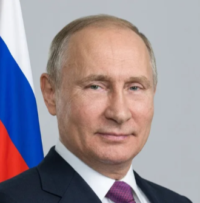

Родился 7 октября 1952 года в Ленинграде (сейчас — Санкт-Петербург).
Образование:
В 1975 году окончил юридический факультет Ленинградского государственного университета
(ЛГУ) им. А. А. Жданова (сейчас — Санкт-Петербургский государственный университет) по
кафедре международного права;
Прошёл курсы переподготовки оперативного состава Комитета государственной безопасности
В Ленинграде (1976) и Москве (1979) при Высшей школе КГБ СССР им. Ф. Э. Дзержинского;
В 1985 году окончил Краснознамённый институт КГБ СССР им. Ю. В. Андропова
(сейчас — Академия внешней разведки);
В 1997 году в Санкт-Петербургском горном институте защитил кандидатскую диссертацию на
тему «Стратегическое планирование воспроизводства минерально-сырьевой базы региона в
условиях формирования рыночных отношений (Санкт-Петербург и Ленинградская область)» и
получил учёную степень кандидата экономических наук.
Карьера в органах госбезопасности:
после окончания ЛГУ был направлен на работу в Комитет государственной безопасности СССР;
В 1985–1990 годах служил в ГДР в рамках командировки внешней разведки, занимал
должности старшего уполномоченного, помощника, старшего помощника начальника отдела;
По выслуге лет был повышен в звании до подполковника и в должности до старшего
помощника начальника отдела; в 1989 году награждён бронзовой медалью
«За выдающиеся заслуги перед Национальной народной армией ГДР».
Политическая карьера:
После возвращения в Ленинград в 1990 году работал помощником ректора ЛГУ по
международным вопросам, затем — советником председателя Ленинградского
городского совета;
В июне 1991 года был назначен председателем Комитета по внешним связям мэрии
Ленинграда (Санкт-Петербурга), с 1994 года — первым заместителем председателя
правительства Санкт-Петербурга;
В 1996 году переехал в Москву, где последовательно занимал должности в Администрации
президента РФ: в 1997 году возглавил Главное контрольное управление, в 1998
году был назначен директором ФСБ;
31 декабря 1999 года после отставки Бориса Ельцина стал исполняющим обязанности
президента РФ, а в марте 2000 года был впервые избран главой государства;
В дальнейшем переизбирался в 2004, 2012, 2018 и 2024 годах;
В 2008–2012 годах занимал пост председателя правительства РФ.